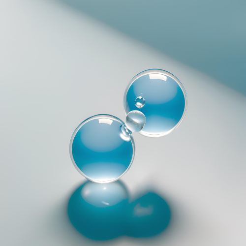
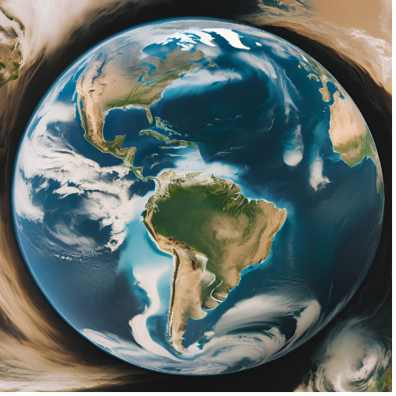
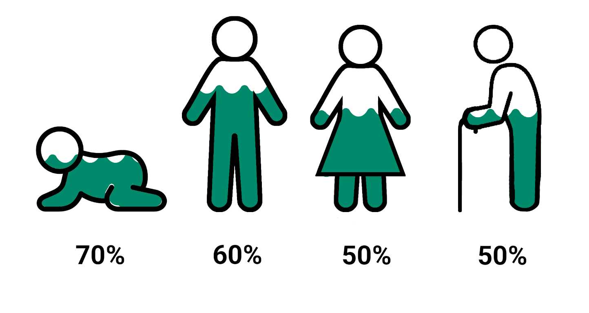

Bem-vindo ao nosso site! Aqui, exploraremos a importância vital da água, um recurso essencial para a vida no planeta. A água não é apenas um elemento básico, mas também um agente fundamental na manutenção da saúde dos ecossistemas e do bem-estar humano. Navegue pelas seções para aprender mais!
A água é uma substância química composta por dois átomos de hidrogênio e um átomo de oxigênio (H₂O). Ela é encontrada em diferentes estados (líquido, sólido e gasoso) e cobre cerca de 71% da superfície da Terra. A água é um recurso renovável, mas sua disponibilidade pode ser afetada por fatores naturais e humanos.
A água ajuda a regular as temperaturas globais, armazenando e liberando calor.
O ciclo hidrológico é fundamental para a distribuição de água doce, afetando climas e ecossistemas.
Rios, lagos e oceanos são habitats essenciais para milhões de espécies, contribuindo para a biodiversidade do planeta.
A água é essencial para o funcionamento adequado do corpo humano, sendo crucial para a digestão, circulação e regulação da temperatura.
A água é vital para a irrigação, ajudando a sustentar a produção de alimentos.
A água é necessária para a limpeza, higiene pessoal e em diversas indústrias, como a fabricação e a energia.
A água é fundamental para a sobrevivência de plantas e animais, contribuindo para a saúde dos ecossistemas terrestres e aquáticos.
Os corpos d'água atuam como filtros naturais, ajudando a purificar a água e manter a qualidade ambiental.
A água desempenha um papel crucial na ciclagem de nutrientes, permitindo a manutenção da vida e a fertilidade do solo.